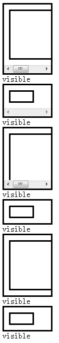
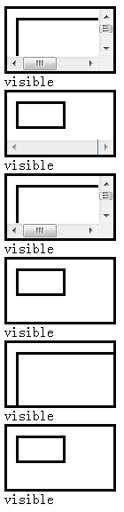
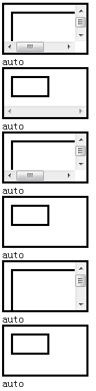

'overflow' 是 CSS 2.1 规范中的特性，而 'overflow-x' 和 'overflow-y' 则是 CSS basic box model 草案中新加入的特性。
'overflow' 特性指定当一个块级元素的内容溢出了元素的框（它作为内容的包含块）时，是否剪切； 'overflow-x' 决定了对左右边(水平方向)的剪切，而 'overflow-y' 决定了对上下边(垂直方向)的剪切。
'overflow' 、 'overflow-x' 和 'overflow-y' 的默认值都是 'visible'。
CSS basic box model 草案中规定，'overflow-x' 和 'overflow-y' 的计算值与所设置的值相等，除非这一对值不合理。 如果其中一个特性值被设置成了 'scroll' 或 'auto'，而另一个特性指定值为 'visible'，那么 'visible' 会被设置成 'auto'。
如果 'overflow-x' 及 'overflow-y' 的值相同，则 'overflow' 的计算值与前两者的指定值相同； 否则，它的值是一个 'overflow-x' 和 'overflow-y' 的计算值对。
关于 'overflow' 的详细资料，请参考 CSS 2.1 规范 11.1.1 Overflow: the 'overflow' property 中的内容。
关于 'overflow-x' 和 'overflow-y' 的详细资料，请参考 CSS basic box model 草案 11.1. The 'overflow', 'overflow-x' and 'overflow-y' properties 中的内容。
当一个元素的 'overflow-x' 或 'overflow-y' 指定值为 'hidden'，另一个特性的指定值为 'visible' 时， 该元素最终渲染使用的 'overflow-y' 或 'overflow-x' 值不同。IE6 IE7 IE8 使用 'hidden'，其它浏览器使用 'auto'。
此问题可能造成页面内容显示不完全，或在不同浏览器下最终显示效果不一致。
| 所有浏览器 |
|---|
CSS basic box model 草案中并没有说明当 'overflow-x' 和 'overflow-y' 其中一个值为 'hidden' 另一个值为 'visible' 时， 该 'visible' 值应该设置为什么，各浏览器有自己的实现。
我们通过以下的测试用例来说明问题，分析以下代码：
<!doctype html> <html> <head> <script type="text/javascript">
if(!window.getComputedStyle) window.getComputedStyle = function(target){ return target.currentStyle; }
function $(id){return document.getElementById(id);} window.onload = function(){ for(var i =
1;i<7;i++){ $("info" + i).innerHTML = getComputedStyle($("cont" + i), null).overflowY; } }
</script> <style type="text/css"> #cont1 div, #cont3 div, #cont5 div { width:150px;
height:100px; } #cont2 div, #cont4 div, #cont6 div { width:50px; height:25px; } .cont { overflow-y :
visible; padding:10px; width:100px; height:50px; } .cont, .cont div { border : 3px solid; }
</style> </head> <body> <div id="cont1" class="cont"
style="overflow-x:scroll; "> <div></div> </div> <div
id="info1"></div> <div id="cont2" class="cont" style="overflow-x:scroll;
"> <div></div> </div> <div id="info2"></div> <div id="cont3"
class="cont" style="overflow-x:auto; "> <div></div> </div> <div
id="info3"></div> <div id="cont4" class="cont" style="overflow-x:auto;
"> <div></div> </div> <div id="info4"></div> <div id="cont5"
class="cont" style="overflow-x:hidden; "> <div></div> </div>
<div id="info5"></div> <div id="cont6" class="cont"
style="overflow-x:hidden; "> <div></div> </div> <div
id="info6"></div> </body> </html>
以上代码组合测试了在子元素宽高大于及小于容器、容器 'overflow-x' 值分别为 'scroll'、'auto' 和 'hidden' 的情况下 'overflow-y' 的渲染结果及计算值。 设置 'overflow-y' 为 'scroll'、'auto' 或 'hidden'，'overflow : visible' 不影响测试结果。
这段代码在各浏览器中表现如下：
| IE6 IE7(Q) IE8(Q) | IE7(S) IE8(S) | Firefox Chrome Safari Opera |
|---|---|---|
|  |  |  |
从测试结果中我们能得到以下结论：
由于 IE6 IE7(Q) IE8(Q) 中存在容器 'width' 或 'height' 的设定值在不足以容纳其内容时将被撑大的问题，导致渲染结果与 IE7(S) IE8(S) 的差异， 而从视觉效果上我们也无法判定容器在渲染时 'overflow-y' 使用的是哪个值，这里猜测情况同 IE7(S) IE8(S)。
对于 'overflow-y' 的计算值与渲染效果不一致，有可能是 IE6 IE7 IE8 对 'overflow-x' 和 'overflow-y' 的实现有问题， 也有可能是 currentStyle 实现的问题，这里不做过多分析。
1.同时设置 'overflow-x' 和 'overflow-y' 的值，不要出现其中之一为 'hidden' 时，而另一个是 'visible' 的情况；
2.避免编写依赖指定值为 'visible' 的 'overflow-x' 和 'overflow-y' 特性的计算值的代码。
| 操作系统版本: | Windows 7 Ultimate build 7600 |
|---|---|
| 浏览器版本: |
IE6
IE7 IE8 Firefox 3.6.10 Chrome 8.0.552.0 dev Safari 5.0.2(7533.18.5) Opera 10.63 |
| 测试页面: | overflow.html |
| 本文更新时间: | 2010-10-19 |
overflow overflow-x overflow-y hidden visible auto